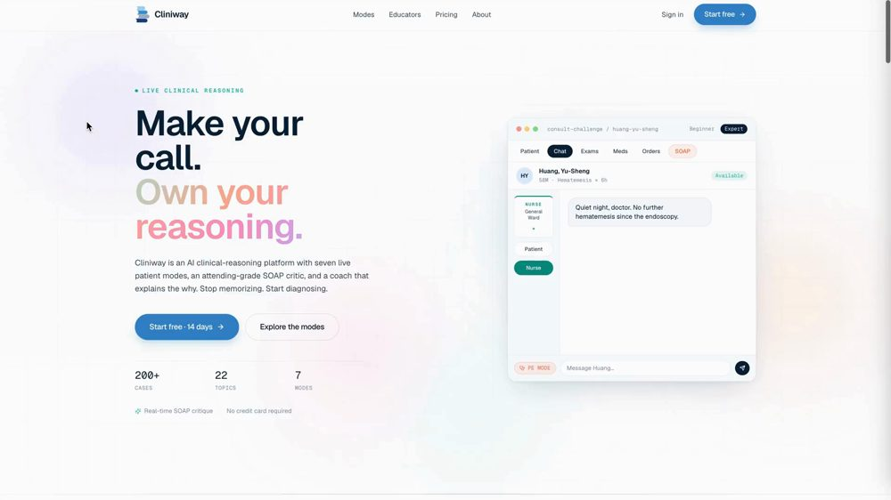

William Wang 王子維
Founder & CEO
- MD · Taipei Medical University, School of Medicine
- PGY · Koo Foundation Sun Yat-Sen Cancer Center
Practice Bright.Fail Light.Learn Right.
Make your call.
Own your reasoning.
Cliniway is an AI clinical-reasoning platform with seven live patient modes, an attending-grade SOAP critic, and a coach that explains the why. Stop memorizing. Start diagnosing.
200+Cases
22Topics
7Modes
See it work

Case Discovery walkthrough · 4 min
QR
goes here
goes here
Drop in a QR pointing to this page once it's live — the fastest handoff at a conference.